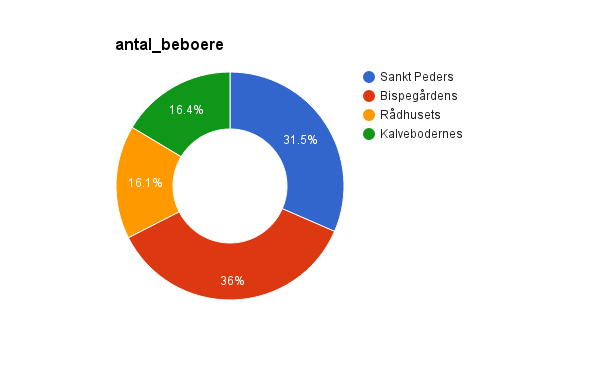

Positive and negative aspects:
Pos - Includes video of speaker presenting the data, which adds to the engagement factor and adds further explanation of the data
Neg - The listener can't interact with the data themselves
Positive and negative aspects:
Pos - Interesting way to numerically visualise and compare something that isn't usually thought of numerically or numerically compared! It is interactive, using the hover function for more info. They also reference where the data came from, which I was interested in.
Neg - Nothing, though perhaps could increase interactiveness by allowing interactor to input their own daily routine for comparison.
For each member in the group, describe an interactive visualization that you would like to be able to build after this course has finished (just create a header for each group member on the .html page). If possible include elements like:
1. I would like to visualise prices of given items in different supermarkets to help me get the best deal!
1. I would like to visualise openly available data from public institutions to illustrate demographic trends. I would get it from projects like http://data.kk.dk/
2. It would bring certain topics into perspective and would eventually make insights and symptom-origin relationships visible, like visualising income, education, origin
3. Fellow students, scientists, politicians
4. 